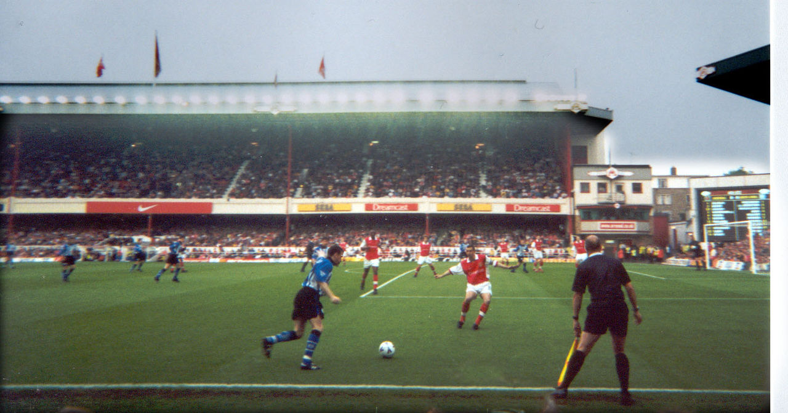

Становление (1886—1925)
Клуб Арсеналбыл основан в 1886 году на юго-востоке Лондона рабочими артиллерийского завода «Ройал Арсенал», который располагается в Вулидже. Первоначально клуб назывался «Дайал Скуэр» (англ. Dial Square) (по имени одной из мастерских завода). Свой первый матч «Арсенал» провел 11 декабря 1886 года против «Истерн Уондерерс». Победу одержали «канониры» со счётом 6:0.
У нас огромный состав. Может и не в количественном отношении, но в качественном. (с) А. Венгер
Клуб стартовал во Втором дивизионе и в 1904 году пробился в Первый дивизион. Однако географическая удалённость клуба стала причиной низкой посещаемости матчей, что привело к финансовым проблемам. В 1913 году (вскоре после возвращения во Второй дивизион) клуб пересёк Темзу, чтобы занять новую арену — стадион «Хайбери», расположенный на севере Лондона. («Хайбери» был домашней ареной «Арсенала» вплоть до августа 2006 года, когда клубом был достроен новый стадион «Эмирейтс».
Возвращение на вершину
Назначение в 1996 году тренером команды Арсена ВенгераАрсена Венгера стало полной неожиданностью для прессы и болельщиков. Вопрос «Арсен Кто?» (Arsene Who?) был очень популярен. Венгер в то время работал в Японии, и о нём мало кто слышал. Никто не мог предположить, что этот человек станет самым успешным менеджером в истории «Арсенала».
 «Арсенал» — «Шеффилд Уэнсдей». 2000 год.